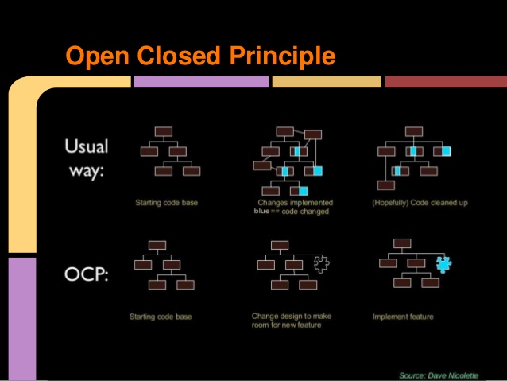

 Software entities (classes, modules, functions, etc.) should be open for extension, but closed for modification.
should be open for extension: this means, that module can be extended. When applications requirements change, we are able to expand the module.
In other words, we have the ability to extend classes, making them more functional. At the same time, the behavior of the old methods does not change, and class itself is not changing to.
closed for modification: after the expansion of the entity behavior, no changes should be made to the code that uses these entities.
any changes in the source code requires a revision of the entire code, where this entity / class is used.
revision of unit testing and other similar procedures.
If code follows this principle, therefore does not require such effort.